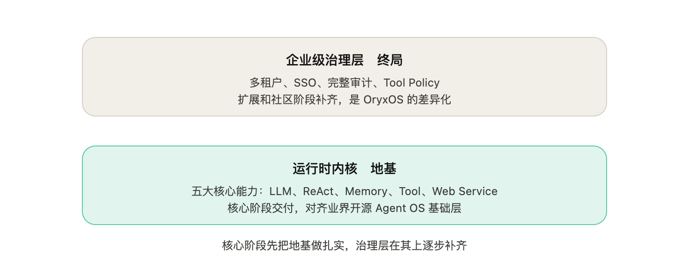
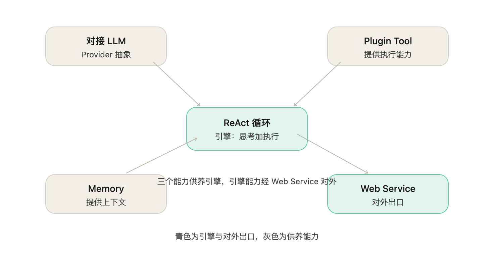
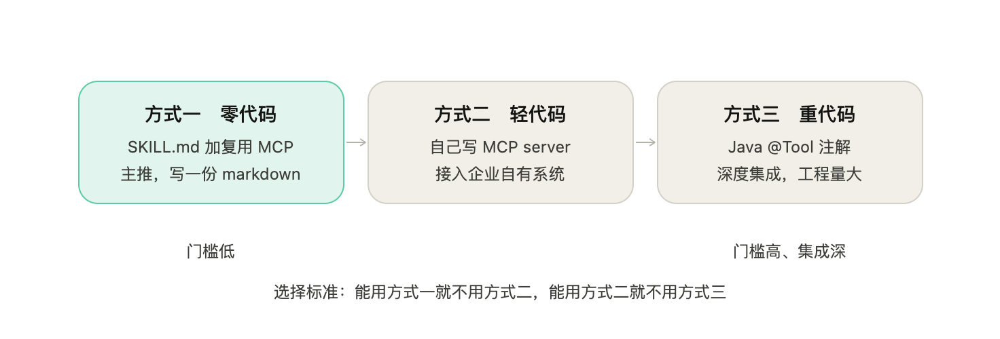
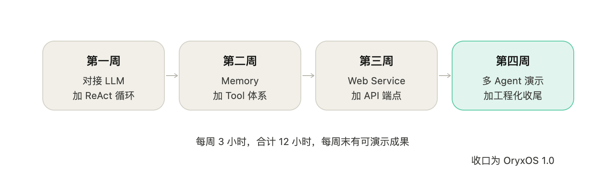

本文档定义 OryxOS 项目的功能需求和非功能需求，作为后续技术方案设计、研发实施、测试验收的依据。本文档回答 What，不回答 How，How 在后续的技术方案中展开。前置阅读《项目篇 OryxOS 业界调研》，本文档基于调研得出的领域判断，不重复论证企业 Agent OS 领域的现状。
OryxOS 是基于 Java 实现的面向企业场景的 Agent OS。它装在企业自己的 K8s 或服务器上，作为统一底座，在底座上跑各种业务 Agent（运维助手、客服助手、HR 助手、销售助手、知识管理助手等），共享一套渠道接入、模型路由、工具调用、记忆系统、沙箱执行能力。支持部署在企业自己的基础设施，不锁任何云生态；调用外部模型或工具时，相关请求内容会发送到对应服务。
业界已经有开源 Agent 项目把这套设计验证过（OpenClaw 用 Node.js，Hermes Agent 用 Python），但 Java 生态没有任何项目把"Agent OS"作为定位。Java 是大量企业现有后端的事实标准技术栈，Spring AI Alibaba 已经把底层 LLM 调用解决了，缺的就是上面那一层"Agent OS"。OryxOS 填这个位置。详细的领域分析见前置调研文档。
这里要先说清楚一个贯穿全文的分层判断，它决定了怎么理解后面的功能规划。

Agent OS 跟 agent runtime（Agent 运行时）不是一回事。
agent runtime 是让单个 Agent 跑起来的执行内核，负责 LLM 调用、工具执行、上下文管理、循环控制。
Agent OS 的内核包含一个 agent runtime，但它在 runtime 之上还要管多个 Agent 的生命周期、统一的对外对内接入、统一记忆、多租户、审计这些 OS 级治理能力。
借操作系统类比，runtime 像单个进程的执行环境，Agent OS 像管理一群进程、调度资源、提供共享服务和治理的那层。一句话，runtime 让一个 Agent 跑起来，Agent OS 让一群 Agent 在企业里被管起来。
理解这个分层，才能看懂 OryxOS 的交付节奏。OryxOS 区别于 OpenClaw、Hermes 的立身之本，是企业级治理能力（Java 原生对齐、多租户、SSO、完整审计、Tool 治理）。但这些治理能力重，做不进有限的核心阶段。所以 OryxOS 的交付分两段：
核心阶段先把 Agent OS 的运行时内核用 Java 做扎实，这一层在能力上对齐业界开源 Agent OS 的基础层；
OryxOS 真正的差异化治理层，在核心内核之上、由扩展阶段和社区共建陆续补齐。
换句话说，核心阶段交付的是 Agent OS 的内核底座，而不是一个治理能力完备的企业级 Agent OS，后者是终局，核心阶段是地基。后面所有"核心功能"都应放在这个语境下理解。
OryxOS 优先做五个核心能力，基于这五个能力可以扩展出企业里大量真实需求。需要说明，这五个能力都属于"让单个 Agent 跑得好"的运行时内核层；让 OryxOS 成为真正"OS"的多 Agent 治理能力（多租户、Tool Policy、审计、SSO），在扩展和社区阶段补齐。

OryxOS 通过 Provider 抽象层对接主流大模型（DeepSeek、通义、Kimi、智谱、混元、豆包、Anthropic、OpenAI 等），Agent 不感知具体调的是哪家模型，运行时切换无 lock-in。
基于这个能力可以做的事：任意业务场景的自然语言对话助手，Agent 通过 LLM 理解用户意图、给出回复；同一个 Agent 在不同任务用不同模型，简单任务走便宜模型、复杂任务走强模型；接入企业自有的本地推理服务（Ollama、vLLM），并约束工具和外发策略以支持数据不出企业；多 Provider 编排，做一份报告可以让规划用便宜模型、综合用强模型。
ReAct（Reason + Act）是 Agent 的核心工作机制：Agent 接到一个任务后，LLM 思考要不要调工具、调哪个工具，调用之后看结果，再决定下一步，直到给出最终响应。
基于这个能力可以做的事：Agent 能自主决定何时调用哪个工具，不需要业务方写死流程；多步骤任务可以一次对话内连续完成（先读文件、再分析、再调 API、再生成报告）；Agent 出错时能自己回滚、重试、换工具；复杂业务流程不需要预先编排，Agent 在运行时动态决定执行路径。
Agent 记得住用户的偏好、项目、决策、对话历史。三层记忆设计，核心阶段先实现会话和长期两层，情景记忆放扩展阶段补齐：
会话记忆：当前对话的完整历史，过长时自动压缩
长期记忆：用户偏好、项目背景、关键事实，存在 MEMORY.md 文件里，跨对话保留
情景记忆：每个任务过程中学到的东西，修改了什么文件、做了什么决策、得到什么结果（扩展阶段补齐）
基于这个能力可以做的事：Agent 跨多次对话记住用户偏好（“我一般用 Spring Boot 不用 Spring MVC”、“我的项目部署在 K8s 上”）；长任务过程中状态保持，对话中断后能恢复继续做；团队内多个 Agent 共享同一个用户的偏好记忆；历史决策可追溯（"上次为什么选 DeepSeek 不选 Kimi"在记忆里能查到）。
Agent 能调用工具实际操作系统，OryxOS 提供两类 Tool：
内置 Tool：OryxOS 自带的基础工具（读写文件、执行 Shell、发起 HTTP 请求）
Plugin Tool：业务方自己扩展的工具，按门槛从低到高有三种方式

零代码：写一份 SKILL.md 描述意图，复用社区现成的 MCP server（GitHub、Slack、Notion 等），让 LLM 自己理解并组合调用
轻代码：用任何语言自己写 MCP server，接入企业自有系统
重代码：用 @Tool 注解写 Java Spring Bean，做深度集成
基于这个能力可以做的事：给 Agent 接入企业自己的 ERP、CRM、CMDB，让 Agent 真正能干企业的活；接 GitHub、Jira、Confluence 这些研发工具，做研发助手；接 Prometheus、Grafana、SSH，做运维自愈；接企查查、天气、新闻 API，做信息聚合助手；业务方零代码扩展，写 SKILL.md 加复用 MCP，纯 markdown 就能上线新场景。
OryxOS 通过完整的 REST API 把所有能力对外暴露，业务系统用 HTTP 调一下就能用上 Agent，不用关心内部怎么实现。Web Service 是 OryxOS 的对外门面，是企业把 AI 能力嵌入已有业务系统的唯一通道。
API 覆盖六类操作：会话管理（创建会话、发消息、查历史、归档会话）、Agent 调用（无状态调用一次 Agent、流式响应扩展阶段补）、Profile 管理（列 Profile、看详情、重载）、Memory 操作（查长期记忆、手动写入、清理）、Tool 信息（列可用 Tool、看元信息）、系统状态（健康检查、运行指标、Provider 状态）。
基于这个能力可以做的事：业务系统通过 REST API 直接调用 Agent，把 AI 能力嵌入已有产品；跨语言集成，任何语言的业务系统都能调；一个 OryxOS 实例同时服务多个业务系统；监控告警、Webhook 触发、定时任务都通过 Web Service 调用 Agent；第三方开发者基于 REST API 二次开发，构建上层 AI 产品。
除了上面五个核心能力，核心阶段还有一个基础模块是 Channel（消息接入渠道）。Channel 主要解决"消息进来、响应出去"，核心阶段只内置 CLI 一种，企业微信、飞书、钉钉等 IM Channel 放扩展阶段。Channel 是核心功能模块，但它不算"五大核心能力"之一，单独说明以免编号体系混淆。
五个能力像五个齿轮，组合起来能解决企业大量真实场景：
全渠道客服：LLM 理解用户问题 + ReAct 循环调知识库 Tool + Memory 记住客户历史 + Plugin Tool 接 CRM + Web Service 让客服系统 HTTP 接入
运维助手：LLM 分析告警 + ReAct 循环调日志查询和服务重启 + Memory 记住历史故障 + Plugin Tool 接 Prometheus 和 SSH + Web Service 让告警系统 Webhook 触发
研发助手：LLM 理解需求 + ReAct 循环读代码改代码 + Memory 记住项目惯例 + Plugin Tool 接 GitHub 和 CI + Web Service 让 IDE 插件接入
知识管理：LLM 理解问题 + ReAct 循环检索文档 + Memory 记住团队约定 + Plugin Tool 接 Confluence + Web Service 让内网门户嵌入对话框
销售助手：LLM 拼装客户画像 + ReAct 循环调 CRM 和企查查 + Memory 记住客户偏好 + Plugin Tool 接销售系统 + Web Service 让销售 App 调用
数据分析：LLM 生成 SQL + ReAct 循环执行查询和图表生成 + Memory 记住业务表结构 + Plugin Tool 接 BI 系统 + Web Service 让 BI 工具集成自然语言查询
这些场景不需要 OryxOS 单独做模块。只要五个核心能力扎实，业务方在 OryxOS 上配 Profile、写 Plugin Tool、调 Web Service 就能落地。OryxOS 不绑定具体业务，业务方按自己的需求组合。
本文档定义 OryxOS 的功能需求，按三档分级。
核心功能是最短链路，跑通"配置一个 Agent、跟它对话、它能调用工具"这件事，对应 Agent OS 的运行时内核。
扩展功能是生产级使用必需但不在核心链路上的能力，包含让 OryxOS 成为真正企业级 Agent OS 的治理层（多租户、SSO、审计、Tool Policy），核心阶段之后陆续推进。
社区共建功能作为长期方向开放给社区贡献。
核心阶段按四个阶段组织，原“四周、每周三小时、合计十二小时”仅作学习投入估算，不是交付承诺。核心范围和验收保持明确，实际投入以完成证据为准；超时延长周期，缩减范围须由维护者明确决定并同步文档和台账。核心阶段之后长期维护和演进。
文档的读者包括项目研发人员、架构师、测试人员、产品和运营、社区贡献者。研发把这份文档当作实施依据，架构师把它当作技术方案设计的输入，测试照着它写用例，社区贡献者理解 OryxOS 的边界，判断在哪些方向可以贡献。
为避免歧义，先把核心术语统一下来。这套术语对齐业界开源 Agent OS 的事实标准（OpenClaw、Hermes Agent 都用类似命名）。
Agent（智能体）：一个具象的智能体，有具体的工种（运维、客服、HR 等）、人格设定、任务范围、可用工具、绑定渠道。一个 Agent 通过 Profile 配置出来，不是写代码写出来的。
Profile（配置）：一个 Agent 的完整配置，包括系统提示词、绑定的 LLM Provider、可用 Tool 列表、绑定 Channel、Tool Policy、引用的 Skill。一个 Profile 对应一个 Agent。
Provider（供应商）：LLM API 服务的抽象，实现统一接口让 Agent 不感知具体调的是哪家模型。OryxOS 通过 Spring AI Alibaba 的 ChatClient 抽象支持主流 LLM。
ReAct 循环（ReAct Loop）：Agent 的核心工作机制，Reason 加 Act 的简称。LLM 思考是否调用工具，调用之后看结果，再决定下一步，直到给出最终响应。这是所有 Agent 框架的底层机制。
Tool（工具）：Agent 可以调用的外部能力，分两类。内置 Tool 是 OryxOS 自带的基础工具（文件、Shell、HTTP）；Plugin Tool 是业务方自己写的工具，通过 @Tool 注解写 Spring Bean 或者通过 MCP 协议接入外部工具服务。
Memory（记忆）：Agent 跨对话保留的状态，分三层。会话记忆是当前对话的完整历史，过长时自动压缩；长期记忆是用户偏好、项目背景、关键事实，存在 MEMORY.md 文件里跨对话保留；情景记忆是任务过程中的状态保持（扩展阶段补齐）。
Channel（渠道）：Agent 对外接入的消息入口，包括 CLI、企业微信、飞书、钉钉、Slack 等。Channel 主要解决"消息进来、响应出去"这件事。HTTP 接入归属于 Web Service，不算 Channel。
Web Service：OryxOS 对外暴露的完整 REST API，是业务系统集成 OryxOS 的唯一通道。覆盖会话管理、Agent 调用、Profile 管理、Memory 操作、Tool 信息、系统状态六类操作。
Session（会话）：用户和 Agent 一次对话的上下文容器，按渠道和会话 ID 划分，包含对话历史、当前上下文、临时变量。
Sandbox（沙箱）：工具执行的隔离环境。核心阶段是应用层白名单校验，扩展阶段补 Docker、K8s pod 等容器级隔离。
Tool Policy（工具策略）：控制 Agent 可用工具的允许或拒绝规则，在 Profile 级别配置。
Skill（技能）：可复用的指令模板，用 SKILL.md 文件描述，兼容 agentskills.io 开放标准。一个 Skill 通常是几个 Tool 的组合加上 prompt 增强。
Bootstrap（引导文件）：加载到系统提示词中的上下文文件，标准命名是 AGENTS.md（项目级 agent 行为说明）、SOUL.md（agent 人格定义）、USER.md（用户偏好）。
Workspace（工作区）：OryxOS 实例的工作目录，默认是 .oryxos/，包含配置、Bootstrap 文件、记忆、会话、技能的子目录。
OryxOS 的核心目标可以用四个词概括：统一、私有、易接入、可观测。
统一指企业内多个业务 Agent 共享同一套底座。Agent 之上只关心业务逻辑，Channel、Provider、Tool、Memory、Sandbox 这些公共能力下沉到 OryxOS。企业上一个新 Agent 不用重复造这些轮子，通过 Profile 配置一份 YAML 就能跑起来。
私有指支持部署在企业自己的 K8s、虚拟机或物理机上。模型可以接外部 API，也可以用本地 Ollama 或 vLLM；调用外部模型或工具会将相关请求数据发送到对应服务。“数据不出企业”需要模型、工具和外发策略共同满足条件，不能仅由私有部署保证。
易接入指企业接入 OryxOS 不需要复杂的厂商绑定关系，基于 Spring Boot 的标准 Java 工程结构，跟企业现有的 ERP、CRM、CMDB、SSO、监控系统直接对接，运维工具链复用现有的 Java 生态（Nacos、Sentinel、SkyWalking、Arthas）。业务方写 Tool 用 MCP 协议或者直接写 Spring Bean，任何方式都能接入。
可观测指 OryxOS 的运行状态对外可观测，标准的 Prometheus 指标、结构化 JSON 日志、健康检查接口、Web 仪表板，适配企业现有的监控告警体系。
三个典型场景说明 OryxOS 的真实用法。这些场景描述的是 OryxOS 完整形态（含扩展阶段能力）下的目标用法，核心阶段先具备其运行时内核。
第一个场景是运维助手。某中型 SaaS 公司的运维团队基于 OryxOS 搭一个运维助手，接入企业微信。Agent 配了几个 Tool，告警分诊、日志查询、服务重启、变更审批。凌晨告警通过 webhook 进 OryxOS，Agent 收到告警后调用日志查询 Tool 拉错误堆栈，跟历史故障库交叉引用发现是已知 bug，自动应用 mitigation Skill 重启服务，在企业微信运维群里汇报"已自愈，详情见附件"，值班工程师早晨起来看下记录就行。这个场景里 OryxOS 提供了 Channel 接入（企业微信）、Provider 路由（主备 LLM）、Tool 调用（SSH、Prometheus、Slack 通知）、Memory（历史故障库）、Skill（自愈 runbook）。
第二个场景是知识管理助手。某金融企业的法务团队基于 OryxOS 搭一个知识管理 Agent，接入飞书。Agent 索引了内部的合同模板、法规文档、历史案例、咨询记录。员工在飞书里问"上次签 SaaS 服务协议是怎么处理数据出境条款的"，Agent 检索 Memory 拉出历史案例，综合相关法规给出建议草稿，标注引用来源。这个场景关键点是 Memory 检索准确度和引用追溯（合规要求所有 Agent 回复必须可追溯到引用源）。
第三个场景是销售助手。某制造业企业的销售部门基于 OryxOS 搭一个客户洞察 Agent，接入企业微信和 CRM。销售跑客户前问 Agent"明天去拜访 A 公司，有什么我需要知道的"，Agent 调用 CRM connector 拉客户历史交易记录，调用企查查 MCP 工具查最新工商信息，调用知识库 Tool 提取这家公司的关键决策人和采购习惯，综合输出客户简报。这个场景里 OryxOS 提供的核心能力是 MCP 集成（外部数据）、企业 IT 系统 connector（自家 CRM）、Tool 编排。
核心功能是首版必须完成的最短链路，四阶段投入仅作估算、不设 12 小时硬期限，对应 Agent OS 的运行时内核。目标是跑通一个完整链路：用 Profile 配置一个 Agent，通过 CLI 跟它对话，它能调用 LLM 和工具完成任务，并能通过 REST API 对外暴露。
需要再次强调，核心阶段交付的是运行时内核，让 OryxOS 成为真正企业级 Agent OS 的治理层（多租户、SSO、完整审计、Tool Policy）在扩展和社区阶段补齐。下面按功能模块展开。
OryxOS 的工作目录是 .oryxos/，通过 oryxos init 命令初始化。这是用户使用 OryxOS 的第一个动作。
oryxos init 在当前目录下创建 .oryxos/ 目录，包含五个子目录和三个 Bootstrap 文件。
五个子目录：profiles/ 存放 Profile 配置（每个 Agent 一个 YAML）、sessions/ 存放会话历史、skills/ 存放 SKILL.md 文件、logs/ 存放结构化日志、tools/ 存放自定义 Tool 配置。
三个 Bootstrap 文件（在 Agent 启动时被自动加载到系统提示词，让 Agent 知道项目背景、自己的身份、用户偏好）：AGENTS.md 项目级 agent 行为说明、SOUL.md 默认 agent 人格定义、USER.md 用户偏好。
oryxos init 同时生成一份默认 Profile（profiles/default.yaml），用最简配置让用户立刻可用：一个默认 LLM Provider、几个基础 Tool、CLI Channel。
Profile 是 Agent 的完整配置，用 YAML 文件描述。一个 Profile 对应一个 Agent。这是 OryxOS 最核心的配置抽象。
Profile 文件包含五个字段：
identity 段（Agent 名称、描述、人格 prompt，也可以引用 SOUL.md 文件）
provider 段（绑定的 LLM Provider，provider 名加模型加参数，可选 fallback 配置）
tools 段（Tool 列表，每个 Tool 名，可选参数）
channels 段（绑定的 Channel，channel 名加配置）
bootstrap 段（引用要加载到系统提示词的 Bootstrap 文件列表）。
Profile 通过 oryxos profile create <name> 命令创建，通过 oryxos profile list 查看，通过 oryxos profile show <name> 查看详情，通过编辑 YAML 文件修改。Profile、Provider、MCP 和工具白名单修改后重启对应进程生效；CLI 退出后重新启动，服务端重启服务。首版不做配置热重载。
核心阶段 Profile 在文件系统里管理，不做 Web 管理台 UI（扩展功能）。核心阶段支持创建并管理多个 Profile，多个 Agent 可以在同一个 OryxOS 实例上并存，这是"OS"在核心阶段的最小体现。
Provider 是 LLM 调用的统一抽象。所有 LLM 调用通过 Provider 接口走，Agent 不感知具体调的是哪家。
核心阶段直接基于 Spring AI Alibaba 的 ChatClient 实现。Spring AI Alibaba 已经做好了主流 LLM（DeepSeek、通义、文心、Kimi、智谱、混元、豆包、Anthropic、OpenAI 等）的 connector，OryxOS 把它们包装成 Provider，不重复造轮子。
每个 Provider 实例配置 provider 名（deepseek、qwen、kimi 等）、模型名、API key、可选的 base URL。Profile 通过 provider 名引用具体 Provider。
核心阶段不做 fallback 和 hedge racing。Provider 故障时直接报错给 Agent，fallback 链路、circuit breaker、hedge racing 这些可靠性能力放在扩展功能。
成本透明在核心阶段做基础版：每次 LLM 调用记录 token 使用量、Provider、模型，落到日志，扩展功能阶段做完整的成本聚合和 Web 看板。
ReAct 循环是 Agent 的核心工作机制，也是 OryxOS 最关键的一段代码。
核心算法是 Reason 加 Act：LLM 思考（Reason）是否要调用工具、调哪个工具、参数是什么；OryxOS 执行（Act）这个工具，把结果回填给 LLM；LLM 看到结果决定下一步动作。这个循环持续到 LLM 给出最终响应或者达到最大迭代次数。
ReAct 循环的执行步骤：接到用户消息追加到 Session 对话历史；组装 Prompt（system prompt 加 Bootstrap 加对话历史加可用 Tool 列表）；调用 LLM Provider 获取响应；如果响应没有 Tool 调用，返回最终响应；如果响应有 Tool 调用，OryxOS 执行 Tool 并把结果作为 tool 消息追加到对话历史；回到组装 Prompt 步骤继续循环；达到最大迭代次数（默认 10 次）强制结束。
核心阶段实现要点：
ReAct 循环逻辑精简，核心循环约数十行 Java 代码，自己实现而不依赖 Spring AI 的 Agent 抽象，让实现者完整掌握 Agent 的工作机制；
最大迭代次数可在 Profile 里覆盖；每次 LLM 调用和 Tool 调用都记录结构化日志，便于排查问题；
Tool 调用失败时按可重试策略再调，重试次数限制在 Tool Result 里返回。
核心阶段不做 Tool 调用并行（一次响应里有多个 Tool 调用时按顺序执行）、上下文动态压缩、Agent 间任务委托（spawn sub-agent）。这些放在扩展功能。
Agent 跨对话保留状态的能力。三层记忆是完整设计，核心阶段做极简版的两层（会话和长期），情景记忆放扩展。
会话记忆（已通过 Session 管理实现）：当前对话的完整历史，通过独立 session_id 定位；Channel、用户和 Profile 是归属字段，同一组合允许多个会话。Session 数据持久化到本地 SQLite，重启 OryxOS 后正在进行的 Session 可以恢复。Session 上下文超过 LLM context window 上限时简单截断早期对话保留近期对话。
长期记忆（核心阶段做极简版）：存在 .oryxos/memory/MEMORY.md 一个 Markdown 文件，在同一工作区的所有 Profile 和对话之间共享，首版不做用户或 Agent 的长期记忆隔离，仅适用于个人或同一可信工作区。Agent 通过两个内置 Tool 主动读写这个文件，save_memory(content) 让 Agent 把要长期记住的事追加到 MEMORY.md，recall_memory(query) 让 Agent 按关键词检索 MEMORY.md 里的相关内容。每轮构建 Prompt 时重新读取 MEMORY.md 作为长期上下文；超长行为需按台账 Q-07 明确。文件超过一定大小（默认 4000 字）时简单截断，扩展阶段做压缩。
核心阶段不做：自动从对话中抽取事实（让 LLM 自己决定何时调 save_memory）、语义检索（recall_memory 用关键词匹配，不做向量化）、情景记忆（任务过程中的修改文件、决策、成果，放扩展）、Memory Wiki 与 claim/evidence 结构化、矛盾检测、新鲜度管理。
用户视角的核心体验：用 OryxOS 一段时间后，Agent 自然会记住用户的偏好、项目信息、关键决策，下一次对话不需要重新解释。这是 Agent OS 区别于 chatbot 的核心体验。
Tool 是 Agent 可以调用的外部能力。Agent 通过 LLM Function Calling 决定何时调哪个 Tool，OryxOS 负责 Tool 的注册、查找、调用、结果回传。Tool 分两类，这两类的区分是 OryxOS 让业务方扩展的核心机制。
内置 Tool（OryxOS 自带）。核心阶段提供三类基础内置 Tool：文件操作 Tool（read_file、write_file、list_dir，在沙箱里执行，有路径白名单限制）、Shell Tool（执行 bash 命令，有超时和命令白名单限制）、HTTP Tool（发起 HTTP 请求 GET、POST，有域名白名单限制）。加上 Memory 用到的两个内置 Tool：save_memory（把内容追加到 MEMORY.md）、recall_memory（按关键词检索 MEMORY.md）。这五个内置 Tool 是"让 Agent 能读写文件、跑命令、调外部 API、记事"的最短链路，足以演示运行时内核的核心价值。
Plugin Tool（业务方自己扩展）。业务方扩展 OryxOS 的能力，按门槛从低到高有三种方式。OryxOS 主推方式一，因为这是 LLM 时代最优雅的写法：业务方只描述意图，让 LLM 自己组合现成能力。
从使用的角度，有三种方式：
方式一（零代码）：写 SKILL.md 加复用现成 MCP server。业务方写一份 .oryxos/skills/<name>.md 描述要做的事，Profile 引用这个 Skill 和需要的几个 MCP server（GitHub、Slack、Notion 这些社区已经有大量现成的开源 MCP server），LLM 读到 SKILL.md 后自己理解任务、自己决定调用哪个 MCP 工具、自己组合完成任务。这种方式的核心是把意图交给 LLM，基础设施提供能力，业务方写一份 markdown 描述零代码就能上线一个新场景。举个例子，业务方想做"每天早上推送昨日 GitHub PR 评审进度到 Slack"：写一份 daily-pr-digest.md 描述任务和触发时机，复用社区现成的 github-mcp 和 slack-mcp，配置一个 Profile 引用这个 Skill 和两个 MCP server，整个过程不写一行代码。
方式二（轻代码）：自己写 MCP server。业务方用任何语言（Python、Shell、Go、Java 等）写 MCP server，通过标准 MCP 协议暴露工具，OryxOS 作为 MCP Client 连接进来。这种方式适合接入企业自己的系统（自家 ERP、CRM、CMDB），社区没有现成 MCP server 时业务方自己写一个。MCP 协议本身是 JSON-RPC，写一个 MCP server 工程量不大。
方式三（重代码）：写 Java Spring Bean。用 Spring AI 的 @Tool 注解标注 Java 方法，OryxOS 启动时自动扫描注册。这种方式适合 Java 工程师做深度集成（直接调用企业内部的 Java 服务接口、复用现有 Spring Bean、跟 Spring Security 集成做权限控制），性能和集成深度最好，但工程量最大。
三种方式的选择标准：能用方式一就不用方式二，能用方式二就不用方式三。Plugin Tool 是 OryxOS 让业务方落地真实场景的关键，OryxOS 本身只提供基础内置 Tool，企业要做运维助手、客服助手、销售助手，靠的是业务方组合 SKILL.md 加 MCP server。
核心阶段 MCP Client 集成。OryxOS 实现一个最小 MCP Client，能连接外部 MCP server 并调用其工具。具体配置是在 .oryxos/mcp_servers.yaml 里声明 MCP server 的 URL 或启动命令，OryxOS 启动时连上 server 把它的工具注册到 Tool 池，Profile 通过 Tool 名引用。MCP Server 暴露、Tool Policy、Tool LRU 加载、Tool 凭证管理这些放在扩展功能。
沙箱是Tool 调用的安全隔离在核心阶段用应用层白名单校验实现，在 Tool 执行入口对参数和资源访问做校验：文件操作有路径白名单、Shell 有命令白名单、HTTP 有域名白名单，并对执行超时和资源占用做限制。这里不使用 Java SecurityManager，它在 JDK 17 起已废弃、JDK 21 已不可用，与本项目 JDK 21+ 的要求冲突。完整的 bwrap、Docker、K8s pod 容器级沙箱放在扩展功能。
Channel 是 Agent 对外的消息接入入口，主要解决"消息进来、响应出去"这件事。HTTP 接入归 Web Service（核心能力五），不在 Channel 范畴内。
核心阶段只内置一种 Channel：CLI Channel，通过 oryxos chat 命令启动，是开发调试时的主要交互方式，支持多轮对话、查看上下文、查看 Tool 调用记录。
企业微信、飞书、钉钉、Slack 这些 IM Channel 放在扩展功能。它们的实现复杂度高（webhook、卡片、媒体、组织架构），且需要单独的 OAuth 流程和企业资质，不纳入首版最短链路。扩展阶段的 IM Channel 底层调用 Web Service，不重复实现 Agent 逻辑。
Web Service 是 OryxOS 的对外完整门面，业务系统通过 REST API 接入 OryxOS 的所有能力。这是 OryxOS 区别于个人助手项目（OpenClaw、Hermes 偏个人定位）的关键能力，企业要把 AI 能力嵌入已有产品，靠的就是 Web Service。
API 覆盖六类操作：会话管理（创建会话、发消息、查历史、归档会话）、Agent 调用（无状态调用一次 Agent、流式响应扩展阶段补）、Profile 管理（列 Profile、看详情、重载）、Memory 操作（查长期记忆、手动写入、清理）、Tool 信息（列可用 Tool、看元信息）、系统状态（健康检查、运行指标、Provider 状态）。
核心阶段 10 个关键端点。 首版做最关键的 10 个端点跑通，其他放扩展阶段：
| 端点 | 说明 | 分类 |
|---|---|---|
| POST /api/v1/sessions | 创建会话 | 会话管理 |
| POST /api/v1/sessions/{id}/messages | 发消息 | 会话管理 |
| GET /api/v1/sessions/{id} | 查询会话历史 | 会话管理 |
| DELETE /api/v1/sessions/{id} | 归档会话 | 会话管理 |
| POST /api/v1/agents/{name}/invoke | Agent 无状态调用 | Agent 调用 |
| GET /api/v1/profiles | 列 Profile | 信息查询 |
| GET /api/v1/memory | 查长期记忆 | 信息查询 |
| GET /api/v1/tools | 列可用 Tool | 信息查询 |
| GET /api/v1/health | 健康检查 | 系统状态 |
| GET /api/v1/info | 系统信息 | 系统状态 |
扩展阶段补齐的 15 个端点：Profile 的 show/reload/create/update/delete；Memory 的 append/clear/search；Tool describe 和调用历史查询；LLM call 历史查询、token 使用统计；Webhook 触发、流式 SSE 响应；Prometheus metrics、OpenAPI spec。
核心阶段不做的部分：认证机制（无认证假设内网，扩展补 API Key 加 JWT）、流式响应 SSE（核心同步阻塞返回，扩展加 SSE）、WebSocket（扩展补齐）、RBAC 权限（扩展加）。
业务系统集成场景：
同步调用：调 POST /agents/{name}/invoke 等返回，适合 stateless 短任务
会话保持：先创建 Session，后续多次发消息保持上下文，适合连续对话
Webhook 触发：告警系统、CI/CD、定时任务通过 Webhook 调 Agent
跨语言集成：任何能发 HTTP 请求的语言都能接入
Session 是用户和 Agent 一次对话的上下文容器。Session 包含起止时间、用户身份、Agent 标识、对话历史、当前上下文、临时变量。每次显式创建 Session 生成独立唯一的 session_id；Channel、用户、Agent 是归属字段，同一组合允许多个独立会话。
核心阶段 Session 数据持久化到本地 SQLite（.oryxos/sessions/ 下）。重启 OryxOS 后，正在进行的 Session 可以恢复。
跨 Session 的基础长期记忆属于首版；上下文压缩、Memory Wiki 放扩展阶段。核心阶段 Session 上下文超过 LLM 的 context window 时，简单截断早期对话保留近期对话。对外提供的 Session API 包括创建 Session、追加消息、获取历史、结束 Session。
OryxOS 提供三种运行模式，在核心阶段全部实现。这三种模式是用户跟 OryxOS 交互的全部入口：
oryxos chat：交互式多轮对话模式。启动后用户在终端跟 Agent 对话，Agent 调用 LLM 和 Tool，实时返回结果。也可以用 --message “xxx” 发送单条消息后退出。这是开发调试和日常使用的主要方式
oryxos serve：HTTP API 模式。启动后 OryxOS 在指定端口（默认 8080）开放 RESTful 接口，业务系统通过 HTTP 调用 OryxOS 的 Agent
oryxos gateway：常驻守护进程模式。启动后 OryxOS 同时服务多个 Channel（扩展功能补齐多 Channel 后才有完整用途，核心阶段只挂 CLI 和 HTTP API）
三种模式共享同一份 Profile 配置和 Session 存储。
OryxOS 通过命令行工具完成主要操作。核心阶段实现 12 个命令，这一组命令是用户跟 OryxOS 交互的全部入口。
启动和状态：oryxos init 初始化工作区、oryxos status 查看配置和运行状态、oryxos chat 交互对话（可选 --profile 指定 Profile，默认用 default）、oryxos serve 启动 HTTP API 服务、oryxos gateway 启动多渠道守护进程。
Profile 管理：oryxos profile list 列出所有 Profile、oryxos profile create <name> 创建新 Profile、oryxos profile show <name> 查看 Profile 详情、oryxos profile delete <name> 删除 Profile。
查询：oryxos provider list 列出已配置的 Provider、oryxos tool list 列出已注册的 Tool、oryxos session list 列出会话历史。
命令行工具是 OryxOS 跟用户最直接的交互界面。核心阶段必须做到命令行体验流畅，有清晰的错误提示和帮助信息。
敏感信息不得进入日志、接口响应、示例或版本库。此处只明确环境变量加载规则，不表示加密存储已经实现。
OryxOS 需要加载 LLM API key、Provider 凭证、MCP server 凭证等敏感配置。
核心阶段做基础版：敏感配置只通过环境变量注入，配置文件仅保存变量引用，不写真实密钥，也不提供独立明文密钥文件加载路径；配置加载时做基础校验（必填项、格式），缺失或非法时给出清晰报错。完整的加密存储、密钥轮转、对接企业密钥管理系统（KMS、Vault）放在扩展阶段。这一节单列，是因为对一个企业级底座，配置和密钥的加载校验是 day one 该有的，不能散落在各模块里无人负责。
OryxOS 作为开源项目，需要一个独立的主页作为对外门面，讲清楚 OryxOS 是什么、能干嘛、怎么用，引导开发者快速上手。
主页是项目方的统一交付物（不是社区共建），在核心阶段做出来。技术栈和具体内容不在本文档展开，常见选择是用 VitePress、Astro 或 Docusaurus 之类的静态站点生成器，把核心理念和快速开始呈现清楚就行。主页跟核心代码同期发布，作为 OryxOS 1.0 对外亮相的一部分。
扩展功能在核心功能完成后推进，补齐生产级使用必需但不在最短链路上的能力，其中包含让 OryxOS 成为真正企业级 Agent OS 的治理层。这一档以开源社区方式陆续补齐，具体节奏看社区需求和贡献者投入。
多 Channel 接入：补齐企业微信、飞书、钉钉、Slack、邮件这几个核心渠道。每个 Channel 通过 Channel Adapter 插件机制扩展。IM 渠道的深度功能（复杂卡片、审批回调、企业组织架构同步、多媒体消息）在这一阶段补齐
Provider Fallback 和可靠性：三层 failover（hedge racing、circuit breaker、自动切换），Provider 故障时自动切换备用，业务不感知
Adaptive Routing：LLM 路由从静态配置升级为动态决策，根据任务类型、历史调用质量、当前 Provider 负载，自动选择合适的 Provider 和模型
Memory 自动抽取：扩展阶段加自动抽取机制，让 LLM 在对话结束时自动提取值得长期保留的事实写入 MEMORY.md
Memory 语义检索：集成向量数据库（Milvus、Qdrant、Weaviate、PostgreSQL pgvector），Memory 写入时生成 embedding，检索按语义相似度匹配
情景记忆：补齐 Memory 第三层，记录任务过程中修改的文件、做出的决策、得到的成果，可按关键词或语义搜索
Memory Wiki：结构化 claim/evidence、矛盾检测、新鲜度管理，让长期记忆不只是流水账
完整 Skill 管理：自动发现、安装、版本管理和市场等能力放扩展阶段；Profile 引用 Skill 文件、加载正文到 Prompt 并结合 MCP 完成任务属于首版。生态标准与兼容细节见台账 Q-05，不能仅凭读取 Markdown 宣称完整兼容。
MCP Server 暴露：OryxOS 自己作为 MCP server，把内部 Agent 的能力暴露给其他系统使用
Tool Policy：Profile 级别的 Tool 允许或拒绝规则，控制每个 Agent 能用哪些 Tool。不能让客服 Agent 拿到能 rm -rf 的 Shell Tool。这是 Agent OS 治理能力里最轻、最能体现 OS 管控的一项，扩展阶段优先做
Tool LRU 加载：工具数量多时，同时只加载一部分，根据 Agent 当前任务动态加载，避免把所有工具塞进 LLM context 消耗 token
完整 Sandbox 隔离：补齐 Docker 容器和 K8s pod 两种 sandbox 实现，WebAssembly Sandbox 作为高性能选项
这一层是 OryxOS 区别于个人级 Agent OS 的核心差异化所在:
Web 仪表板：提供 Web 仪表板做 Profile 管理、Session 查看、监控看板、审计日志查询
SSO 和多租户：补齐 SAML 和 OIDC 标准协议接入，对接企业 AD、Okta、Entra ID、阿里云 IDaaS、企业微信认证。三级租户模型（组织、部门、项目），RBAC 权限粒度到 Agent、Tool、Skill 级别
审计与可追溯：完整审计事件记录、JSON 结构化输出、trace ID 串联、敏感信息脱敏、SIEM 导出
可观测性：Prometheus 指标、结构化日志、健康检查接口、Grafana Dashboard 模板
集群化部署与高可用：多节点协同通过 Nacos 或 ETCD 完成，Controller 角色通过选举产生，节点故障自动迁移负载，API 请求不中断
社区共建功能不在 OryxOS 主线开发计划内，作为长期方向开放给社区贡献。这一档不规定时间表，有人贡献就推进，没人贡献就先放着。
项目文档分层交付：首版必须提供需求、技术方案、调研、实施指南，以及包含环境要求、密钥配置、构建启动、API 示例和五个 Demo 步骤的最小快速开始。完整 API 参考、部署运维手册、贡献者指南和更多场景手册留到后续社区建设。
Skills Marketplace：一个社区贡献的 Skill 共享平台，Skill 用 SKILL.md 描述，符合 agentskills.io 开放标准，跟 OpenClaw 和 Hermes Agent 兼容。Marketplace 让企业可以一键安装别人贡献的运维 Skill、客服 Skill、销售 Skill
SDK 多语言支持：优先级是 Java（OryxOS 同语言）、Python、TypeScript、Go，其他长尾语言看社区诉求
可视化 Profile 编辑器：让非工程师也能配置和调整 Agent。编辑器输出标准的 Profile YAML，OryxOS 直接读取。产品形态接近 Dify 的 Agent 配置界面
Native 文件生成：不依赖 LibreOffice 直接生成 pptx、docx、xlsx 的能力，Java 生态可以用 Apache POI 实现
多区域部署：企业在不同地域部署 OryxOS 集群，集群之间的 Agent、Memory、Session 可以跨区域协同。涉及时钟同步、网络分区处理，实现复杂度高
Kubernetes Operator：把 OryxOS 的部署、扩缩容、配置变更、版本升级工程化，跟 Helm、ArgoCD 集成，做到一键部署、声明式配置、GitOps 工作流
移动端管理台：运维场景下用手机随时查集群状态、处理告警。工程量小、价值清晰，适合社区贡献者起步贡献
Voice Channel：语音唤醒和连续语音对话，适配会议室、车载、智能家居场景
RISC-V 和边缘部署：OryxOS 跑在 Raspberry Pi、边缘网关、嵌入式设备。Java 通过 GraalVM Native Image 可以做到接近原生
核心阶段单节点支持的 Agent 数不低于 10 个，单节点支持的并发 Session 数不低于 100 个，Session 创建 P99 延迟控制在 200 毫秒以内。LLM 调用本身的延迟取决于 Provider，OryxOS 内部的转发开销控制在 50 毫秒以内。集群规模通过水平扩展支撑更大规模（扩展功能阶段）。
已注册的 Profile 配置和已写入的 Session 数据保证不丢，这是和企业使用方的基本契约。LLM Provider 故障时核心阶段直接报错给上层，完整 failover 在扩展阶段实现。Tool 调用失败时按重试策略再调，默认指数退避最多三次。
Profile、Provider、MCP、工具白名单修改后重启对应进程生效。Bootstrap、已引用的 Skill 文件正文和 MEMORY.md 在下一轮组装 Prompt 时重新加载；修改 Profile 中的引用列表仍需重启。动态配置热重载放扩展阶段。物理机、虚拟机、Docker、Kubernetes 的部署验证按实际交付逐项记录。
JDK 21 及以上（Spring Boot 3.x 要求），操作系统支持 Linux 主流发行版（Ubuntu 22.04+、CentOS 8+、Debian 11+、Alibaba Cloud Linux 3、Rocky Linux）。LLM Provider 协议兼容性上，OpenAI 兼容协议是事实标准，只要 Provider 实现这套协议，OryxOS 就能直接接，不需要专门适配。
核心阶段做基础。API 调用支持 HTTPS，具体配置与可信环境边界在台账 Q-12 落实。敏感配置通过环境变量注入，不写入配置、日志、响应、示例或版本库；加密存储、轮转及 KMS/Vault 留到扩展阶段。Tool 调用进行路径、命令和网络目标的应用层白名单校验；这不是完整沙箱，不能据此保证完整进程隔离。认证、容器隔离和 SSO 留到扩展阶段。
数据驻留由部署位置、模型和工具配置以及外发策略共同决定。调用外部模型、HTTP 或 MCP 服务时，相关请求内容会发送到对应服务，不能保证默认不外发。完整审计、SIEM 导出及合规所需的扩展技术能力后续逐项建设和验证；项目本身不背书任何合规认证。
几个核心流程的步骤化描述，作为后续技术方案设计的输入。
工作区初始化流程是用户第一次使用 OryxOS 的标准动作。用户在自己的项目目录下执行 oryxos init，OryxOS 创建 .oryxos/ 目录、五个子目录、三个 Bootstrap 文件、一份默认 Profile。用户编辑 Bootstrap 文件填入项目背景、Agent 人格、用户偏好，编辑 default.yaml 配置 Provider、模型和所需的环境变量引用，真实 API key 从环境变量注入。
Profile 创建和 Agent 启动流程是用户加一个新业务 Agent 的标准动作。用户执行 oryxos profile create <name> 命令，OryxOS 在 .oryxos/profiles/ 下创建新的 YAML 文件，用户编辑配置 Agent 人格、Provider、Tool 列表、Channel。然后通过 oryxos chat --profile <name> 启动 Agent，OryxOS 加载 Profile，初始化 Provider 连接、注册 Tool 到 Agent 工具池、把 Bootstrap 文件加载到系统提示词，Agent 进入待对话状态。
消息处理流程是 OryxOS 最高频的链路。消息从 Channel 进来（CLI 输入、HTTP API 调用、或扩展阶段的 IM webhook），Channel Adapter 把消息转换成 OryxOS 内部统一格式，带上用户身份。Agent 接到消息后查询 Session 上下文，组装 LLM prompt（包括 Bootstrap、对话历史、可用 Tool 列表），调用 LLM Provider 获取响应。响应里如果包含 Tool 调用，OryxOS 执行 Tool，把结果回传给 LLM 继续生成。最终响应通过 Channel Adapter 转换成渠道特定格式，发回给用户。整个过程中所有动作落结构化日志。
Tool 调用流程是 Agent 执行业务动作的链路。LLM 在生成响应时通过 Function Calling 指明要调哪个 Tool 和参数。OryxOS 接到 Tool 调用请求后，从 Agent 的 Tool 池找到对应 Tool，做参数校验和白名单校验，然后执行。内置 Tool 直接在 OryxOS 进程内执行（在应用层白名单约束下），MCP Tool 通过 MCP 协议转发给对应的 MCP server 执行。执行结果带上成功失败标识、错误信息、可重试标识，回传给 Agent。Agent 把 Tool 结果作为新一轮 LLM 输入继续生成最终响应。
Session 上下文管理流程是 Agent 处理一段对话的内部链路。显式创建会话时生成独立 session_id，初始化对话历史为空，并保存 Channel、用户和 Agent 归属字段。后续消息通过 session_id 追加到对应会话，不自动合并同一归属组合的其他会话。CLI 恢复入口、并发和归档写入规则在台账 Q-04 落实。Session 上下文超过 LLM 的 context window 上限时，核心阶段简单截断早期对话保留近期对话（扩展阶段做总结压缩）。Session 在配置的超时时间内无消息则结束，对话历史归档可查。
几个核心实体的字段描述，具体存储结构在技术方案中细化。
Profile（YAML 文件）：
| 字段 | 说明 |
|---|---|
| name | Profile 名，全局唯一 |
| description | 描述 |
| identity | 身份段：agent_name、prompt 或 prompt_file |
| provider | Provider 段：name、model、temperature、可选 fallback |
| tools | Tool 列表 |
| channels | Channel 列表 |
| bootstrap | 引用的 Bootstrap 文件列表 |
| created_at / updated_at | 时间戳 |
Session（持久化到 SQLite）：
| 字段 | 说明 |
|---|---|
| session_id | 每次显式创建独立生成，全局唯一；不由 channel/user/profile 联合生成 |
| profile_name | 关联 Profile |
| channel | 来源 Channel |
| user_id | 用户标识 |
| messages | 对话历史 JSON 数组，每条有 role、content、timestamp、tool_calls |
| context_state | 当前上下文状态 JSON |
| status | active、archived |
| created_at / last_active_at / archived_at | 时间戳 |
Memory（核心阶段为文件形态，非数据库表）：长期记忆是 .oryxos/memory/MEMORY.md 一个 Markdown 文件，按追加方式写入，无结构化 schema。这一点跟其他持久化实体不同，特此说明。扩展阶段引入向量库后，Memory 才有结构化的 embedding 存储。
Tool Invocation（记录每次 Tool 调用）：
| 字段 | 说明 |
|---|---|
| invocation_id / session_id / profile_name | 标识与关联 |
| tool_name | Tool 名 |
| parameters | 参数 JSON |
| status | running、completed、failed、timeout |
| result / error | 结果或错误（可选） |
| started_at / completed_at | 时间戳 |
| token_cost | 关联的 LLM token 消耗 |
LLM Call（记录每次 LLM 调用）：
| 字段 | 说明 |
|---|---|
| call_id / session_id | 标识与关联 |
| provider / model | 调用的 Provider 和模型 |
| prompt_tokens / completion_tokens / total_tokens | token 用量 |
| latency_ms | 延迟 |
| status | 调用状态 |
| started_at / completed_at | 时间戳 |
OryxOS 核心功能的实施按 四阶段学习节奏组织；图中“4 周 / 12 小时”保留为原始估算，不是交付承诺。

每个阶段围绕一个或多个核心能力展开，以可演示成果推进；原周次名称用于标记阶段，周期可随实际工作延长。核心阶段完成后，OryxOS 转入长期的开源社区维护。
四阶段的能力主线和可演示成果如下表（原周次是阶段标记）：
| 周次 | 核心能力 | 周末可演示成果 |
|---|---|---|
| 第一周 | 对接 LLM 加 ReAct 循环（能力一加二） | Agent 能多轮对话并调 HTTP Tool 完成简单任务 |
| 第二周 | Memory 加 Tool 体系（能力三加四） | Agent 能记住偏好、调文件读写、调外部 MCP 工具 |
| 第三周 | Web Service（能力五） | 外部系统能通过 10 个 REST 端点调用 OryxOS |
| 第四周 | 多 Agent 演示加工程化收尾 | 多 Agent 并存、CLI 完整、Session 跨重启恢复、主页可访问 |
第一周：对接 LLM 加 ReAct 循环（核心能力一加二）
实施内容：
oryxos init 工作区初始化、Profile YAML 解析
Provider 抽象（基于 Spring AI Alibaba，先跑通 DeepSeek 或 Kimi）
ReAct 循环（核心循环约数十行 Java，含 LLM 调用、Tool 调用解析、消息累积）
一个基础内置 Tool（HTTP）、CLI Channel
Session 管理（内存版，第四周加 SQLite 持久化）
验收：oryxos chat 能跟一个 Agent 多轮对话，Agent 能通过 ReAct 循环调用 HTTP Tool 完成简单任务（比如"查一下北京天气并告诉我穿什么"）。
第二周：Memory 加 Tool 体系（核心能力三加四）
实施内容：
Memory 长期记忆极简版（MEMORY.md 文件、save_memory 和 recall_memory 两个内置 Tool、启动时整个文件注入 system prompt）
文件操作 Tool（read_file、write_file、list_dir）、Shell Tool（带白名单校验）
MCP Client 集成（连接外部 MCP server）
验收：Agent 能记住用户偏好（“我用 Spring Boot”）并在后续对话用到，Agent 能调本地文件读写、调外部 MCP server 的工具，完成一个跨工具的任务。
第三周：Web Service 加 API 端点（核心能力五）
实施内容：
Web Service 核心 10 个 REST 端点（会话管理 4 个、Agent 调用 1 个、Profile/Memory/Tool 列表 3 个、health/info 2 个）
通过 oryxos serve 启动 Spring MVC 服务
配置与密钥加载（环境变量注入加基础校验）
验收：外部系统能通过 10 个 REST 端点调用 OryxOS（创建会话、发消息、查 Profile、查 Memory、查 Tool、查健康状态），API 调用链路完整。
第四周：多 Agent 演示加工程化收尾
实施内容：
多 Agent 演示（配置两个不同 Profile 的 Agent 在同一实例并存，验证"OS"的多 Agent 形态）
命令行工具完整 12 个命令、Session 持久化到 SQLite（跨重启恢复）
Bootstrap 文件机制（AGENTS.md、SOUL.md、USER.md 加载到系统提示词）
结构化日志、项目主页（VitePress 或类似静态站点工具）
验收：同一实例上多个 Agent 并存可用，完整的命令行工具体验流畅，Bootstrap 文件能影响 Agent 行为，Session 跨重启能恢复，项目主页可访问。
核心阶段结束后：OryxOS 1.0 是一个可演示的最小完整 Agent OS 运行时内核，五个核心能力（对接 LLM、ReAct 循环、Memory、Tool、Web Service）全部跑通，具备配置 Agent、CLI 对话、多 Agent 并存、REST API 接入、MCP 工具生态对接的能力。
社区接力阶段：扩展功能（多 Channel、Memory 自动抽取和语义检索、情景记忆、完整 Skill 管理（基础加载首版已纳入）、MCP Server、Tool Policy、完整 Sandbox、Web Service 剩余 15 个端点加 SSE 流式加认证、Web 仪表板、SSO 和多租户、完整审计、集群高可用）以及让 OryxOS 成为真正企业级 Agent OS 的治理层，由社区贡献者陆续推进。
OryxOS 主仓库提供清晰的 issue 标注和贡献者指南，标注哪些是 good-first-issue、哪些是 feature-request、哪些是 long-term-goal。
几个已识别的风险和应对思路。
原“四周十二小时”是实践估算，不是交付硬期限。若阶段未完成则延长周期，保留可演示的中间成果，但不静默挪走首版要求。任何范围缩减须由维护者明确决定，同步需求、技术方案、台账与验收清单。
Spring AI Alibaba 的多个 LLM connector 在实际接入时可能有 Function Calling、Stream、Token 计数、错误码细节不一致的问题。应对是核心阶段先把 OpenAI 协议（DeepSeek、Kimi 支持）跑稳，其他 Provider 在扩展阶段每接入一家做完整回归测试。
核心阶段 Tool 调用用应用层白名单校验做基础隔离，不是完整 Sandbox。Tool 调用如果有 bug 或被恶意构造可能影响 OryxOS 进程。应对是核心阶段严格限制内置 Tool 的能力范围，文件操作有路径白名单、Shell 有命令白名单、HTTP 有域名白名单，不开放任意 Shell 执行。这意味着核心阶段不建议在生产环境跑高敏感场景，真正的生产部署在扩展阶段补齐 Docker Sandbox 之后。
Java 应用启动慢、内存占用大，影响 OryxOS 作为"装好就跑"的 Agent OS 体验。应对是核心阶段先用普通 Spring Boot 启动验证功能完整，扩展阶段引入 GraalVM Native Image 把启动时间和内存占用压到接近 Node.js 和 Python 水平。
扩展功能依赖社区贡献者，可能某些功能长期没人推进。应对是项目维护方对核心扩展功能（多 Channel、Memory、Tool Policy）保持基本投入，社区共建功能（Marketplace、可视化编辑器、移动端）纯粹靠社区，即使没人做也不影响主线。
核心阶段交付的是运行时内核，能力上对齐业界开源 Agent OS 的基础层，企业级治理差异化在扩展阶段才显现。社区可能会问"核心阶段的 OryxOS 跟 OpenClaw、Hermes 有什么区别"。应对是文档明确说明核心阶段是地基（Java 原生的运行时内核）、差异化是终局（企业级治理层），不把核心阶段包装成完整的企业级 Agent OS。
OryxOS 兼容 agentskills.io 标准，但跟它们是不同的项目，设计哲学和产品形态有差异。应对是项目文档明确说明定位差异：OpenClaw 偏个人（Node.js），Hermes 偏个人到小团队（Python），OryxOS 直接定位企业场景（Java），三者通过 SKILL.md 互通，生态互补不竞争。
几个未决事项，在技术方案阶段或后续迭代决议。
Provider 抽象已由技术方案确定：通过 ProviderService 薄封装，显式映射 provider name 到 ChatModel；禁用框架自动工具执行。具体依赖兼容性在台账 Q-01 验证。
持久化已由技术方案确定为 SQLite，长期记忆采用 MEMORY.md。数据库路径、JPA 方言、迁移和并发写策略仍见台账 Q-02/Q-03。
Bootstrap 文件加载顺序和优先级，AGENTS.md、SOUL.md、USER.md 怎么组合进系统提示词，有不同方案。技术方案阶段决议。
GraalVM Native Image 已由技术方案放入扩展阶段；首版采用普通可执行 JAR，不把原生编译列为发布条件。
最终验收统一维护在 ACCEPTANCE.md。本文的阶段演示不替代最终清单；尚未实现或未验证的事项保留在 台账。
验收分四档：功能、性能、可运维性、场景。
功能验收：核心功能（第 5 章）全部完成，每个功能模块至少有一个端到端测试用例覆盖。具体包括：
oryxos init 工作区初始化
Profile 配置和管理（支持多 Profile 并存）
Provider 抽象（基于 Spring AI Alibaba，至少跑通 DeepSeek 和 Kimi 两个）
ReAct 循环（多轮 Tool 调用、正确累积消息历史、达到最大迭代次数时正确终止）
Memory 长期记忆（save_memory 写入、recall_memory 关键词检索、启动时注入 system prompt）
内置 Tool（文件、HTTP、Shell、save_memory、recall_memory）
Plugin Tool 接入（方式一零代码 SKILL.md 加 MCP 跑通；方式三 @Tool 注解示例跑通）
MCP Client 集成、CLI Channel
Web Service 核心 10 个 REST 端点全部跑通
Session 持久化（SQLite，跨重启恢复）、12 个命令行工具、配置与密钥加载
性能验收：通过压力测试验证单节点 10 个 Agent 稳定运行 4 小时、单节点 100 个并发 Session、Session 创建 P99 延迟低于 200 毫秒、内部转发开销低于 50 毫秒。这些是核心阶段的目标，不达标不影响发布但需在扩展阶段优化。
可运维性验收：最小快速开始（环境要求、密钥配置、构建启动、API 示例、五个 Demo 步骤；验证新手约 30 分钟完成单节点部署）；命令行工具有清晰的帮助和错误提示；项目主页可访问，讲清楚 OryxOS 是什么、怎么快速开始。
场景验收：通过五个 demo Agent 验证五个核心能力，五个 demo 跑通是核心功能发布的硬条件。
| Demo | 验证能力 | 内容 |
|---|---|---|
| Demo 一 | 对接 LLM 加 ReAct | “查天气并写日报”，Agent 调天气 API、用文件 Tool 写日报到本地 |
| Demo 二 | Memory | 第一次对话告诉偏好（Spring Boot、K8s），Agent 调 save_memory；第二次对话能引用记忆回答 |
| Demo 三 | Plugin Tool 加 MCP | Agent 通过 MCP Client 调外部 server 的工具完成跨工具任务 |
| Demo 四 | Web Service 同步调用 | 外部系统创建 Session、发消息、获取响应、归档，链路跑通 |
| Demo 五 | Web Service 多端点联动 | 外部系统先后调 info、profiles、tools、invoke、memory 完成一次业务流程 |
OryxOS 是基于 Java 实现的面向企业场景的 Agent OS，装在企业自己的 K8s 或服务器上，作为统一底座跑各种业务 Agent，共享一套渠道接入、模型路由、工具调用、记忆系统、沙箱执行能力。
OryxOS 的交付分两段。
核心阶段先用 Java 把 Agent OS 的运行时内核做扎实，这一层在能力上对齐业界开源 Agent OS 的基础层；
OryxOS 真正的差异化治理层（多租户、SSO、完整审计、Tool 治理），在核心内核之上由扩展阶段和社区共建陆续补齐。核心阶段是地基，企业级治理是终局。
核心阶段优先做五个核心能力，基于这五个能力可以扩展出企业里大量真实需求：
对接 LLM（Provider 抽象，让 Agent 能调任意主流大模型，运行时切换无 lock-in）
ReAct 循环（Agent 大脑，LLM 思考加工具执行，多步骤任务自主完成）
Memory 三层记忆（核心阶段会话加长期 MEMORY.md，跨对话记住用户偏好和项目背景）
Plugin 自定义工具加内置工具集（内置文件、Shell、HTTP，业务方通过 SKILL.md 加 MCP 零代码扩展、MCP server 轻代码扩展、@Tool 注解重代码扩展）
Web Service（REST API 覆盖会话管理、Agent 调用、Profile/Memory/Tool 信息查询、系统状态，业务系统通过 HTTP 接入）。
核心阶段按四个阶段组织，原每周三小时的安排仅作估算；以完整验收为准，不承诺十二小时交付：
第一周做对接 LLM 加 ReAct 循环
第二周做 Memory 加 Tool 体系
第三周做 Web Service 加 API 端点
第四周做多 Agent 演示加工程化收尾。
完成之后是一个能跑通真实 demo 的最小完整 Agent OS 运行时内核。
核心阶段之后，OryxOS 以开源社区方式长期维护，陆续推进扩展功能：多 Channel、Memory 自动抽取和语义检索、情景记忆、完整 Skill 管理（基础加载首版已纳入）、MCP Server 暴露、Tool Policy、完整 Sandbox 隔离、Provider Fallback 和 Adaptive Routing、Web Service 剩余端点加 SSE 流式加认证、Web 仪表板、SSO 和多租户、完整审计、可观测性、集群高可用、企业 IT 系统 connector。其中治理层是 OryxOS 成为真正企业级 Agent OS 的关键。
更长期的方向（Skills Marketplace、SDK 多语言支持、可视化 Profile 编辑器、Native 文件生成、多区域部署、Kubernetes Operator、移动端管理台、Voice Channel、RISC-V 和边缘部署）开放给社区共建。
核心理念：OryxOS 核心阶段把运行时内核做扎实，扩展阶段补齐企业级治理形成差异化，业务方在 OryxOS 上配 Profile、写 Plugin Tool、调 Web Service 就能解决自己的业务问题。OryxOS 不绑定具体业务，业务方按自己的需求组合。